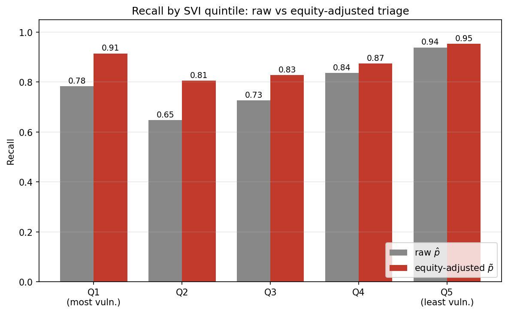
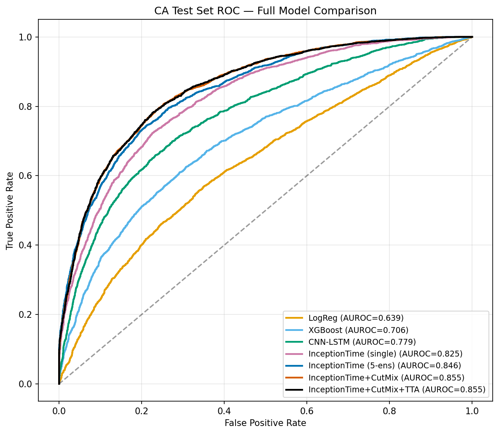
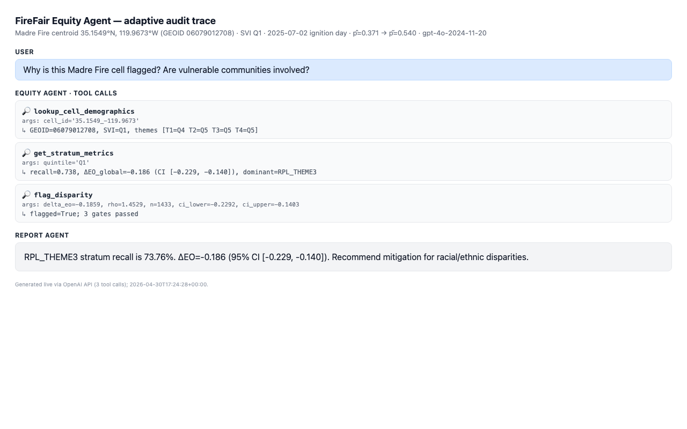
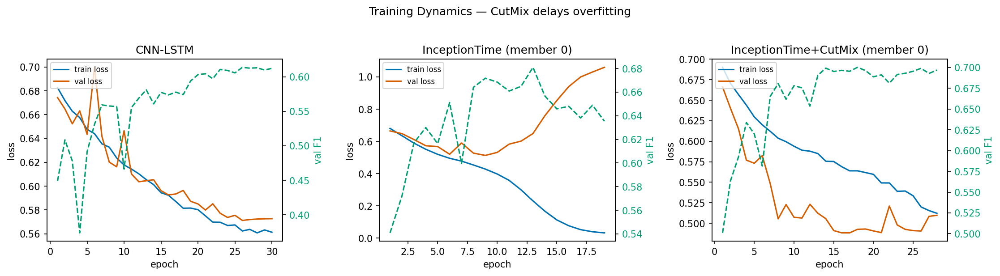

Equity-Adjusted Triage
Recall by SVI quintile before and after applying the equity-adjusted risk score.
Equity-aware wildfire forecasting
FireFair combines a wildfire ignition backbone with social vulnerability auditing and agent-generated operational briefs. The project asks whether aggregate wildfire ML metrics hide lower recall for vulnerable communities, then adjusts triage under a fixed alert budget.

Recall by SVI quintile before and after applying the equity-adjusted risk score.
The system separates wildfire prediction from fairness auditing and reporting. A temporal backbone estimates ignition risk, an SVI audit layer measures recall disparities, and LLM agents turn risk and equity evidence into operational explanations.
Five InceptionTime+CutMix models score California grid cells for wildfire ignition risk.
CDC/ATSDR social vulnerability quintiles expose recall gaps hidden by aggregate metrics.
Raw p-hat scores are reweighted into p-tilde to improve vulnerable-stratum recall under alert budgets.
Equity, vision, and report agents produce auditable explanations for high-risk cells.
Results combine predictive performance, equity diagnostics, and an agent trace that demonstrates how the system explains a vulnerable high-risk cell.
Equity adjustment improves recall in the most vulnerable strata while preserving a fixed triage budget framing.

InceptionTime+CutMix reaches AUROC 0.855 on the California test set.

Tool-call trace showing lookup, stratum metrics, disparity flagging, and final report text.

CutMix regularization delays overfitting in the temporal ignition model family.